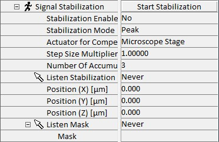

|
信号稳定
|
信号稳定是一项功能，用于通过在每次测量行之后检查定义的参考点来补偿 Z 方向的热漂移。这可用于图像扫描或大面积扫描。
更多信息（操作指南）：

启动稳定
此按钮启动信号稳定以测试参数。
稳定启用
此参数可在测量期间开启和关闭信号稳定。如果启动稳定成功，则自动设置为是。
稳定模式
稳定模式定义表面类型。
峰值
用于仅在表面处产生强度的样品。
正边缘
用于体样品上表面，该样品在表面以下也产生信号。
负边缘
用于体样品下表面，该样品在表面以上也产生信号。
补偿执行器
可以在此选择显微镜台或扫描台来补偿 Z 方向的漂移。由于线性度更好，建议优先选择扫描台。
步长乘数
如果表面产生的强度峰比正常情况更宽或更窄，可以使用此参数进行调整。
累积次数
此参数定义在每个步骤累积的光谱数量。
监听 稳定
如果激活此功能，可以通过点击图像或视频窗口来定义稳定参考点的位置。
位置 (X/Y/Z) [µm]
这些参数定义稳定参考点的位置。对于图像扫描，值必须在扫描台范围内。
监听 掩模
如果激活此功能，可以通过鼠标选择确定光谱区域的掩模。
掩模
掩模决定用于补偿的光谱区域。请参考光谱自动对焦。